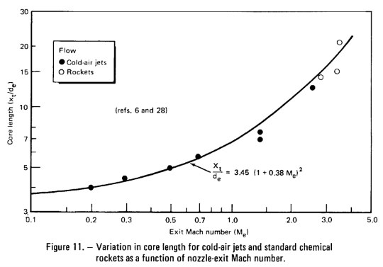
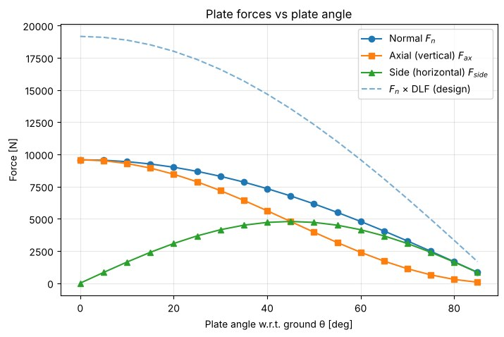
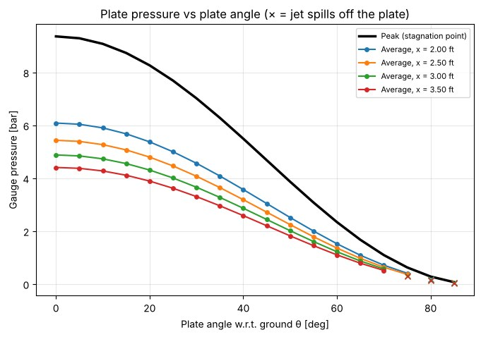
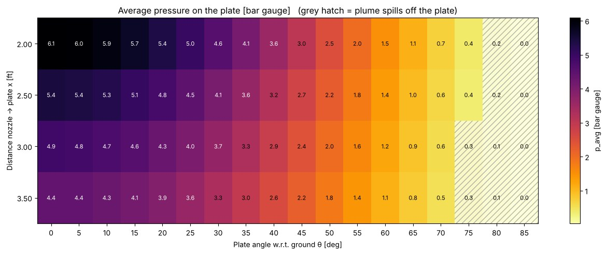
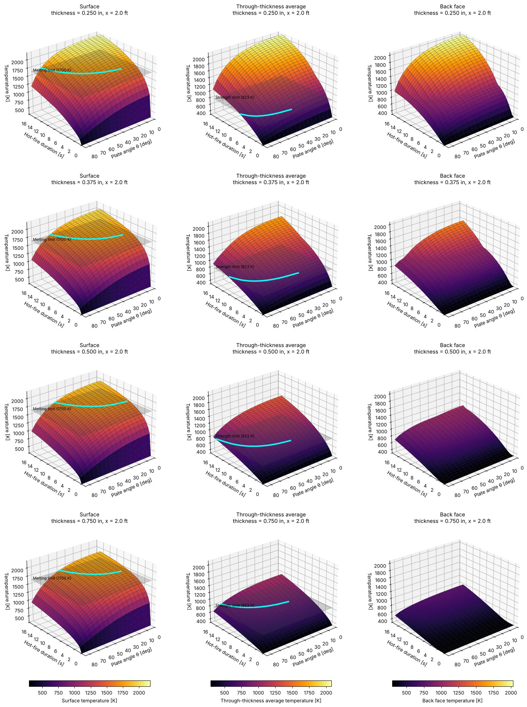

Why this plate matters
On the vertical test stand the MOE engine fires straight down, so a steel plate has to turn the plume sideways without melting or losing strength. Its loads also go straight into the stand: the vertical part into the stand legs and the horizontal part into the bolts and bracing. I wrote a Python model that goes from the engine's combustion conditions all the way to a pass/fail answer for every plate thickness, height below the nozzle and angle. The plate material was switched from a castable refractory to A500 carbon steel along the way.
The design space: a 24 x 24 in plate, 4 thicknesses (1/4, 3/8, 1/2 and 3/4 in), 4 heights (2 to 3.5 ft below the nozzle exit) and 18 angles (0° to 85° from the ground). That's 288 configurations.
Calculation process
- Nozzle geometry
From the engine drawing: 1.930 in throat, 4.846 in exit, 5.000 in chamber diameter and 7.125 in chamber length. Chamber pressure 500 psia, O/F 1.1, sea-level ambient.
ε = Ae/At = 6.305 · CR = 6.712 · L* = 1.215 m - Combustion with NASA CEA
Ran an equilibrium rocket case (infinite area combustor) for liquid IPA and LOX through RocketCEA, then pulled temperatures, specific heats, speed of sound, exit Mach, c* and exit pressure.
Tc = 2,296 K · Me = 3.08 · Pe = 0.714 bar (overexpanded) · c* = 1,567 m/s - Mass flow and thrust
Mass flow from chamber pressure and c*, then thrust as a momentum term plus a pressure term, checked against CEA's thrust coefficient.
ṁ = PcAt/c* = 4.15 kg/s · F = ṁVe + (Pe − Pa)Ae = 9,578 N (2,153 lbf) · Isp = 235 s - Fully expanded plume
The jet leaves below ambient pressure and gets squeezed right after the exit. Isentropic relations give its Mach number and diameter once it matches ambient.
Me 3.08 → Mfe 2.89 · De 12.3 cm → Dfe 10.9 cm - Shock-cell length
Prandtl-Pack relation, with the theoretical constant (1.306) and an empirical one (1.1), to see which "Mach diamond" each plate height lands in.
Ls = C √(Mfe² − 1) Dfe = 0.32 to 0.38 m → plate sits in shock cell 2 to 4 - Potential core length
From NASA SP-8072 (Eldred, 1971). Inside the core the centerline gas is exactly what left the nozzle: full velocity, full stagnation temperature, no air mixed in.
Lc/De = 3.45 (1 + 0.38 Me)² = 16.3 → Lc = 2.0 m. Every plate height (0.61 to 1.07 m) is inside the core. - Plume size at the plate
Core diameter shrinks linearly to the end of the core, and a turbulent mixing layer grows on the outside. The outer growth rate uses incompressible spreading (~0.95, DNS data) times a supersonic compressibility factor (~0.2, Papamoschou & Roshko 1988).
Dcore = Dfe(1 − x/Lc) = 5 to 7.5 cm · Dout = Dcore + 2δ = 34 to 51 cm footprint - Forces on the plate (and into the stand)
Inside the core the jet momentum flux equals the thrust. Splitting it by the impingement angle gives the load on the plate, the vertical part that goes into the stand legs, and the horizontal part the bolts and bracing have to take. A dynamic load factor of 2 covers the startup transient.
Fn = J sinθimp · Faxial = Fn sinθimp · Fside = Fn cosθimp · at 30°: 8.3 / 7.2 / 4.1 kN - Plate pressure
Peak pressure is the pitot pressure behind a normal shock (Rayleigh formula), spread with a modified Newtonian distribution. Average pressure comes from the normal force over the elliptical footprint, and the model flags any case where the plume spills off the plate.
p02 = 10.4 bar abs at the stagnation point - Gas state and transport properties at the stagnation point
The gas is brought to rest at chamber temperature. Density from the ideal gas law, and cp, viscosity, conductivity and Prandtl number from CEA's chamber transport properties (equilibrium, which is slightly conservative), converted to SI and cross-checked with Pr = cpμ/k.
T = 2,296 K · ρ = 0.98 kg/m³ · Pr = 0.54 - Velocity gradient at the stagnation point
How fast the gas speeds up as it spreads sideways from the stagnation point. Derived from the Newtonian pressure drop plus Euler's equation (Anderson, ch. 6).
β = (1/R) √(2(pstag − Pa)/ρ) ≈ 25,500 1/s for a flat plate - Stagnation-point heat flux
Sibulkin / Fay-Riddell correlation with a 2x margin for turbulence and unsteadiness, plus gas radiation folded into an effective gas temperature.
h = SF · 0.763 Pr−0.6 √(ρμβ) cp (T0/Ti)0.03 → hmax = 7,760 W/m²K, qmax = 15.7 MW/m² - Transient conduction through the steel
1D explicit finite difference with 41 nodes through the thickness: convective hot face, insulated back face, and steel conductivity and specific heat re-evaluated every step from each node's temperature (Eurocode 3, EN 1993-1-2). The time step is set by the stability limit Fo(1 + Bi) ≤ 1/2. Each run is simulated out to 15 s of hot-fire.
ρcΔx dTi/dt = qi→i+1 − qi−1→i · 2,900 to 24,000 time steps per thickness - Pass / fail
A configuration passes if the surface stays under the melting limit (1,700 K) and the through-thickness average stays under the strength limit (550 °C). For each thickness and height, the code finds the minimum angle that passes with every steeper angle also passing.
Results
| Plate thickness | Minimum passing angle (3.5 s burn) |
|---|---|
| 1/4 in | 75° |
| 3/8 in | 50° |
| 1/2 in | Any angle |
| 3/4 in | Any angle |
The answer is the same at every height from 2 to 3.5 ft, because the plate always sits inside the potential core where the gas hasn't slowed down yet. That gives the stand design freedom to place the plate where it fits best. The 3D maps extend this to longer hot-fires (up to 15 s): the cyan line on each surface is the minimum plate angle that still passes for a given burn duration.







How it ties into the stand
This model and the vertical test stand were designed together. The stand sets where the plate can physically go (2 to 3.5 ft below the nozzle). The diverter model hands back the loads the plate pushes into the stand: the axial part goes into the legs and the side part into the bolts and bracing.